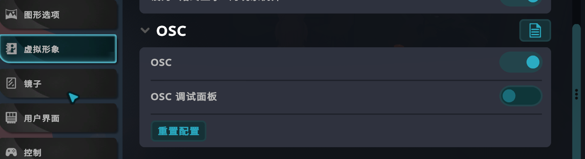

语音工作台
从一句话开始，让声音和文字一起出现。
01音频设备
使用虚拟音频设备，将短音节声音送入游戏麦克风。
02开始说话
16 kHz · 本地识别识别模型SenseVoiceSmall · CPU 推理
首次使用先加载模型。文字试听无需加载识别模型。
03字幕与声音
等待 0 / 10单音节时长决定每个音节发多久；语速限制音节出现的频率。时长较大时会自动降低实际语速，完整发声后再播下一个音节。
运行记录
模型气泡与本机端口
VRChat OSC · 协议 v1模型气泡模式下会通过 VRChat OSC（127.0.0.1:9000 /avatar/parameters/EB_*）推送文字切片到头顶气泡，同时保留本机预览端口。
声音由选定的输出设备播放。文字与进度通过本机端口提供给模型适配器。
个人生僻字扩展槽位
第 128 行 · 最多 64 字模型气泡默认已内置 8,089 个字符（含全部 GB2312 一/二级字如「霆」「尬」「氪」「炫」，并支持繁简自动转换）。若需显示极生僻字或专属昵称字符，请在此填入并同步填入 Unity 气泡工坊「一键换字体」中重新烘焙。
先听见，再把声音送进游戏。
ekac-bubble 将麦克风语音识别成文字，再播放逐字短音节。它是游戏角色式的说话音效，不是逐字朗读的自然语音。
- 先试听声音打开「音频测试」，选耳机、输入文字，点击「播放测试」。无需下载识别模型。
- 再识别语音回到「语音工作台」，展开「识别模型」，首次点击「下载并加载模型」，也可导入已有模型。
- 选择使用场景点击「刷新设备」，选真实麦克风和播放设备，保存设置，再点击「开始监听」。按住默认 F8 或界面按钮说话，松开后等待识别与播放；也可选「持续监听」。
音频测试页的设置独立保存；选好音色和设备后，请在语音工作台设置同样的参数。更改场景或麦克风后，需要重新开始监听。
通用游戏 · 只发送声音
声音路线- 按下方步骤配置 Voicemeeter，将合成音送入虚拟麦克风。
- 在工作台选择「通用游戏 · 仅声音」，勾选「播放短音节」，保存设置。
- 在游戏语音设置里，将输入设备选为 Voicemeeter Out B1，并开启游戏语音。
- 开始监听并说一句话，使用游戏的麦克风测试或让朋友确认声音。
这个模式不发送文字；软件内的气泡只是本地预览。只选择耳机作为播放设备，游戏不会收到合成音。
VRChat · Chatbox 字幕
文字路线- 在 VRChat 的设置 → 虚拟形象 → OSC中打开 OSC 开关，位置见下图；也可在动作菜单打开 OSC → Enabled。
- 在工作台选择「游戏 Chatbox · 整句发送」，保存设置。使用 VRChat 默认 OSC 接收端口 9000，软件和游戏运行在同一台电脑。
- 开始监听，按住 F8 说话；也可输入文字，点击「加入播放队列」测试字幕。
- 只要字幕时关闭「播放短音节」；字幕加声音时，另外按 Voicemeeter 路线设置游戏麦克风。
OSC 只负责文字，声音仍走游戏麦克风。Chatbox 整句发送，长文本分段；切换到「模型气泡 · VRChat 头顶显示」后不发 Chatbox，而是推送到已挂载 ekac气泡插件 的模型头顶。
VRChat 官方 OSC 设置 ↗
推荐搭配 · Voicemeeter Banana
把播放声音变成游戏麦克风Voicemeeter 提供虚拟音频设备和混音。ekac-bubble 不附带或自动安装它；请从 VB-Audio 官网下载，按官方说明以管理员身份安装并重启电脑。
- 打开 Voicemeeter Banana，在右上方 A1 选择自己的耳机或扬声器，通常优先选择对应的 WDM 设备。
- 在 ekac-bubble 工作台点击「刷新设备」：麦克风选真实麦克风；播放设备选 Voicemeeter Input (VB-Audio Voicemeeter VAIO)，保存设置。
- 找到 Voicemeeter 的 VAIO 虚拟输入条，打开 B1，取消静音、检查音量。想自己也听到合成音时，再打开该条的 A1。
- 游戏的麦克风选 Voicemeeter Out B1。较旧驱动可能显示为 Voicemeeter Output (VB-Audio Voicemeeter VAIO)。
只发送角色音效
只将 VAIO 虚拟输入条送入 B1。真实麦克风输入条的 B1 保持关闭，或不在 Voicemeeter 中添加真实麦克风；ekac-bubble 仍直接读取真实麦克风做识别。
原声和音效一起发送
在 Voicemeeter 的硬件输入条选择真实麦克风，再打开该条的 B1。此时游戏会同时收到原声和短音节，请确认这是你想要的效果。
游戏声音和系统声音保持输出到耳机，避免误送进 B1。ekac-bubble 的识别麦克风不要选 Out B1，否则可能把合成音再次识别。使用耳机可减少回授。
遇到问题，先检查这里
软件有电平，游戏里没有声音
先在「音频测试」确认能播放，再检查 VAIO 输入条是否有电平、B1 是否开启，以及游戏是否选择 Out B1 并打开语音。输入和输出是配对设备，名称方向不要选反。
没有字幕，或完全没有识别结果
没有识别结果：检查真实麦克风、Windows 麦克风权限、识别模型和「开始监听」状态。已有识别结果但没有字幕：检查 Chatbox 场景、VRChat 的 OSC 开关及默认 9000 端口；通用游戏模式不会发送字幕。
只有一边响、重复声音或啸叫
检查 Voicemeeter 的左右平衡是否居中。出现原声叠加时关闭真实麦克风条的 B1；重复识别时检查 STT 是否误选了虚拟输出。监听优先用耳机，不要把游戏声音回送进 B1。
收起窗口后还会工作吗？
「收起到托盘」会继续监听与播放。关闭窗口则保存设置并退出；停止监听会释放识别模型。下次启动后重新开始监听即可。